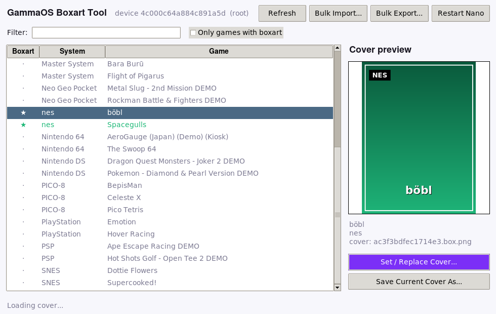
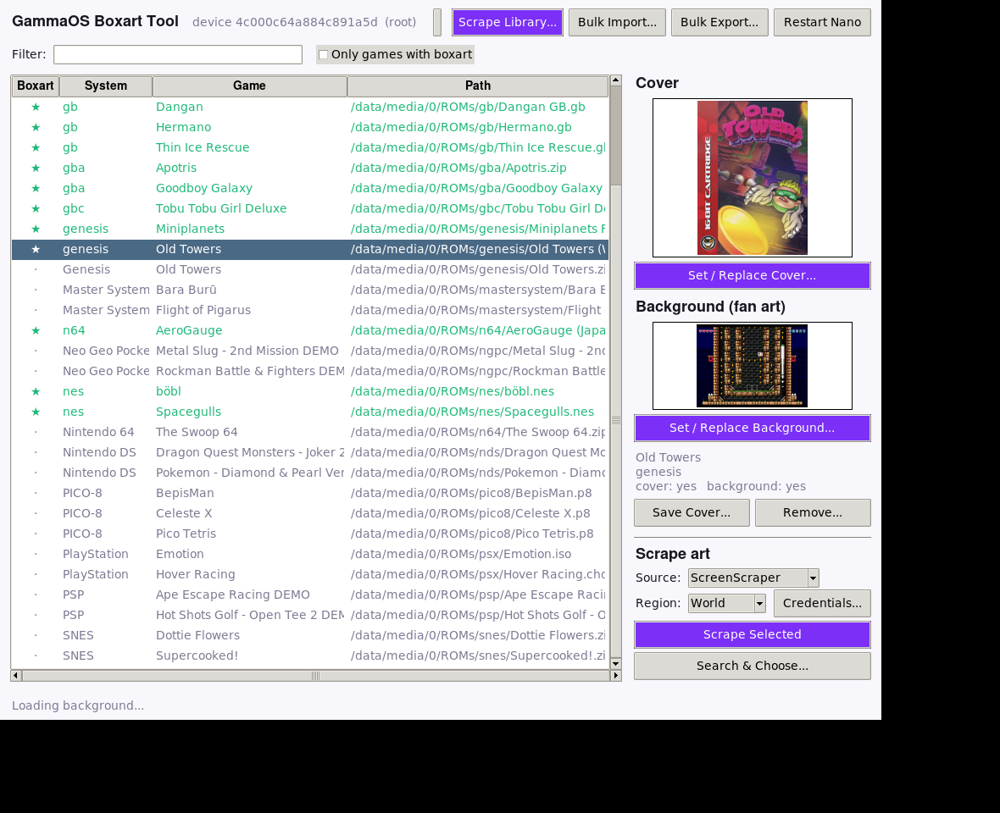
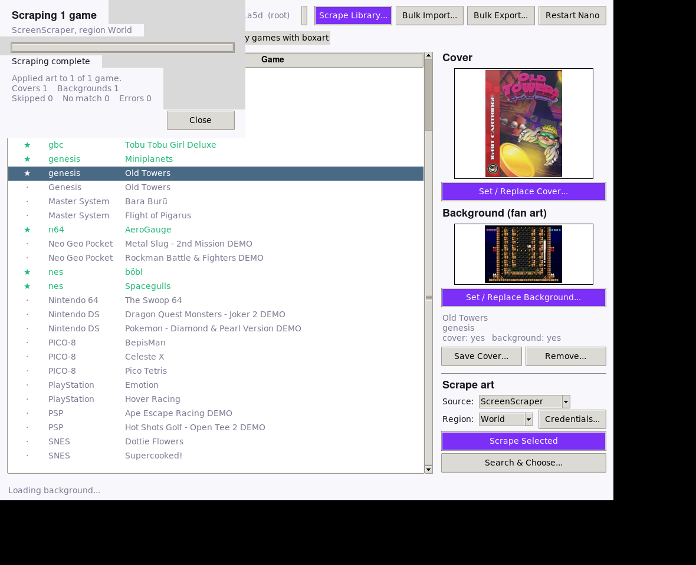
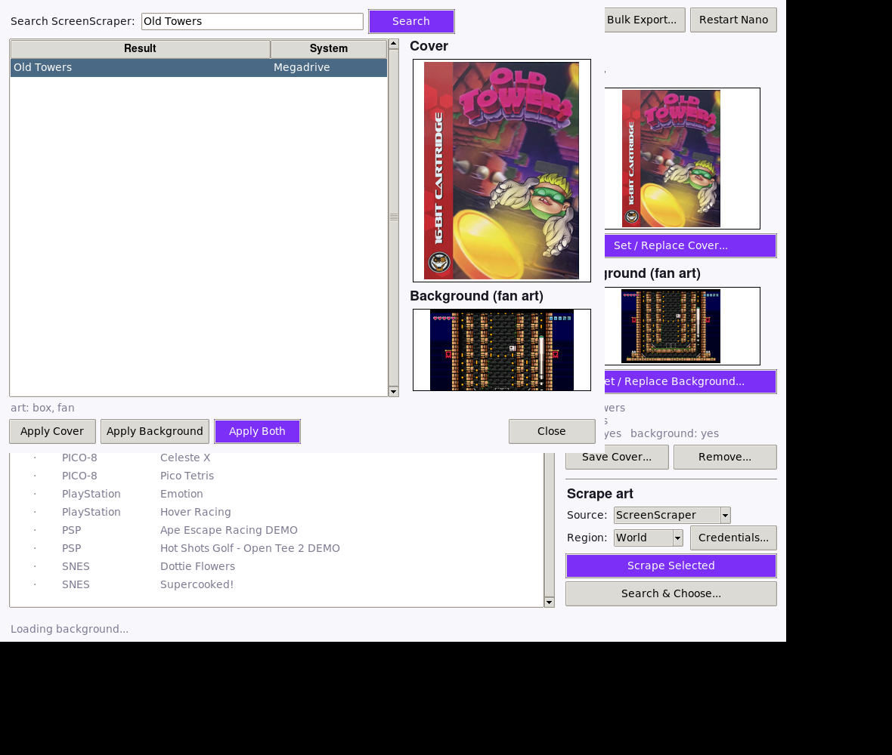
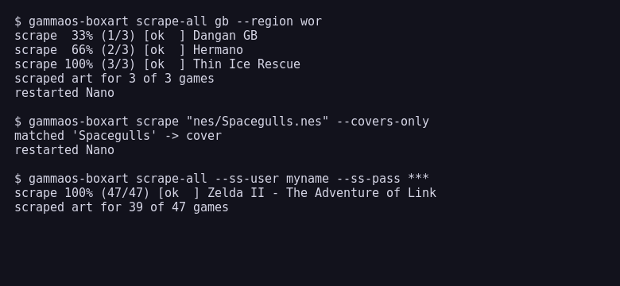
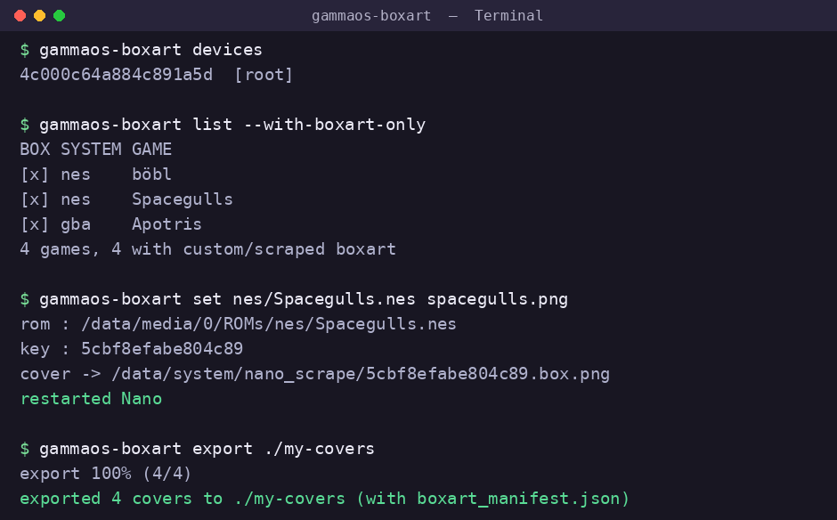
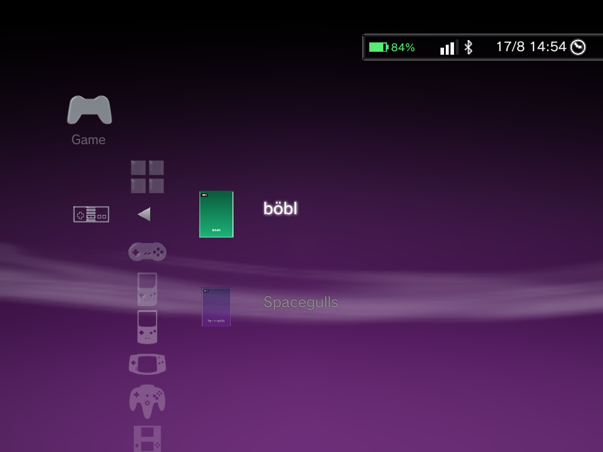
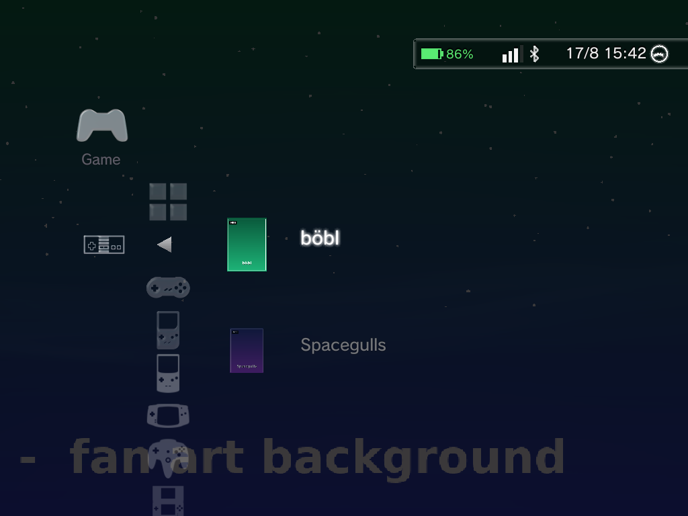

The Boxart Scraper and the per-game Set Boxart option cover most needs, but sometimes you want to manage art in bulk: drop in your own covers and backgrounds from a computer, fix a whole system at once, or back up everything you have collected. This page shows how, end to end, with a ready-made tool and the full on-device format if you would rather do it by hand.
A game has two images: the cover (the boxart thumbnail) and the background (the fan-art image Nano shows full-screen behind the game). You can set either or both.
The quick ways, inside Nano
If you only need one or two covers, you do not need any of this. Inside Nano you can:
- Run the Boxart Scraper (Settings > Game Settings > Boxart Scraper) to fetch art automatically.
- Highlight a game, press the Options button, and choose Set Boxart to use any image from your Photos.
Both are covered on the Boxart and Metadata page. The rest of this page is for managing covers in bulk or from a PC.
The GammaOS Boxart Tool
The easiest way to manage your art from a computer is the GammaOS Boxart Tool, a small cross-platform app (Windows, macOS, Linux) that talks to your device over ADB. It has a desktop window and a command line, manages both the cover and the background, and writes to the same place Nano does, so anything you set shows up in the XMB, DSi and Minima themes.
Get it here: github.com/TheGammaSqueeze/GammaOS-BoxartTool
What you need
- Your handheld connected over USB with USB debugging turned on (Settings has a Developer Options entry, and desktop mode exposes the full Android settings).
- Root ADB. The cover cache lives in a protected system folder, so the tool runs
adb rootfor you. This works on the standard GammaOS builds. - The
adbcommand on your PATH. New to this? ADB Setup and Logs installs it in a couple of minutes on Windows, macOS or Linux.
Download
Grab the prebuilt binary for your system from the Releases page: Windows, macOS (Intel or Apple Silicon), or Linux. No Python needed. Run it with no arguments for the window, or pass a command for the CLI. The binaries are unsigned, so allow it past SmartScreen (Windows) or right-click Open (macOS) the first time.
Prefer to run from source? You need Python 3.8+ (Tkinter is bundled; pip install pillow gives nicer previews), then pip install . or python3 gammaos-boxart.py --gui.
The desktop app
Launch the app (or gammaos-boxart-gui from source). It connects to your device, lists your games (the ones that already have a cover are starred), and previews the selected game's cover and background.

From here you can:
- Set / Replace Cover pick any image for the boxart thumbnail; the tool pushes it and restarts Nano so it appears right away.
- Set / Replace Background pick the full-screen fan-art image shown behind the game.
- Save Cover As pull an existing cover back to your PC.
- Remove delete the cover, the background, or both.
- Bulk Import and Bulk Export manage the whole library in one go.
Scrape art automatically
The easiest way to fill a library is to let the tool scrape covers and backgrounds for you, from your PC, from ScreenScraper or TheGamesDB. GammaOS's ScreenScraper account is built in, so ScreenScraper works out of the box with no signup.

- Pick the Source (ScreenScraper or TheGamesDB) and Region (default World, the widest set of art and international titles). Under Credentials..., a personal ScreenScraper account is optional (higher quota) and TheGamesDB needs your own free API key.
- Highlight one or more games (Ctrl or Shift click, or search then select) and choose Scrape Selected, or fill the whole library with Scrape Library... (only games missing art are fetched, unless you tick overwrite).
- For a game that does not auto-match, use Search & Choose...: type keywords, then pick exactly which result and which art to apply.
- Scraping shows a live progress dialog and a summary of the results (how many covers and backgrounds were applied, and how many were skipped, had no match, or errored), so you always know how it went.


From the command line:
gammaos-boxart scrape nes/Spacegulls.nes # one game
gammaos-boxart scrape nes/Spacegulls.nes --title "Space Gulls" # override the search term
gammaos-boxart scrape-all # whole library (missing art only)
gammaos-boxart scrape-all nes --overwrite # one system, re-scrape
gammaos-boxart scrape-all --region us # pick a region
gammaos-boxart scrape-all --source thegamesdb --tgdb-key KEY # use TheGamesDB
gammaos-boxart scrape-all --ss-user NAME --ss-pass PW # use your own account

It matches games the same way GammaOS Nano does on the device (by CRC and filename per system), so you get the same results without loading down the handheld. Scraped art is written to the same place as everything else, so it shows in the XMB, DSi and Minima themes.
The command line
Every action is also a command, which is handy for scripting or batching.

gammaos-boxart list # every game, boxart marked
gammaos-boxart set nes/Spacegulls.nes cover.png # add or replace the cover
gammaos-boxart set nes/Spacegulls.nes bg.jpg --fan # add or replace the background
gammaos-boxart get nes/Spacegulls.nes -o out.png # pull the cover to your PC
gammaos-boxart remove nes/Spacegulls.nes --both # remove the cover and background
gammaos-boxart export ./my-covers # back up every cover and background
gammaos-boxart import ./my-covers # bulk import a folder
A game can be named by its full device path (/storage/emulated/0/ROMs/nes/Game.nes) or the short system/file form (nes/Game.nes). Add --fan to any set, get or remove to act on the background instead of the cover.
Bulk backup and restore
export writes every cover into a folder as system/GameName.png (and each background as GameName.fan.png), plus a boxart_manifest.json, so you have a tidy, portable backup. import reads that folder back: with the manifest it restores each image to the exact game, and without one it matches by filename (Spacegulls.png finds Spacegulls.nes, and Spacegulls.fan.png sets its background). This is the fast way to move your art to a new device or a fresh install.
Here is a tool-added cover and a tool-added background rendering on the device, in the XMB theme:


How boxart is stored
If you would rather understand the format or edit it by hand, here is exactly how Nano keeps cover art. Everything lives in a protected folder:
/data/system/nano_scrape/
index.json the manifest (version 2)
names.json per-game title overrides (version 1)
<key>.box.png a game's cover image
<key>.fan.jpg a game's fan art
<key> is the game's ROM path run through a 64-bit FNV-1a hash, written as 16 lowercase hex digits. It is only a filename convention: Nano loads a cover from the path stored in the manifest, so what really matters is the index.json entry.
index.json
index.json is an object with a version and an items array. Each item ties one ROM to its art and metadata. Only non-empty fields are written.
{
"version": 2,
"items": [
{
"rom": "/data/media/0/ROMs/nes/Spacegulls.nes",
"box": "/data/system/nano_scrape/5cbf8efabe804c89.box.png",
"fan": "/data/system/nano_scrape/5cbf8efabe804c89.fan.jpg",
"scraper": "manual",
"when": 1786974787,
"title": "Spacegulls"
}
]
}
| Field | Meaning |
|---|---|
rom |
The full ROM path. Nano matches it across the /storage/emulated/0, /data/media/0, /sdcard and /storage/self/primary views, so any of those prefixes works. |
box |
Absolute path to the cover (thumbnail) image. This is what Nano actually loads. |
fan |
Absolute path to the background (fan-art) image Nano shows behind the game (optional). |
title |
The displayed name (optional). |
scraper |
Where it came from; use manual for your own art. |
when |
Unix timestamp. |
desc, genre, players, rating, date, dev, pub |
Optional scraped metadata. |
names.json is the same shape with { "rom", "name" } items and just renames a game.
Nano reads index.json once at startup, so after any change you must restart Nano for it to show. It also refuses to save over an index.json it cannot read, so a bad edit will not wipe your library, but you should still keep a backup (use export).
Doing it by hand
If you want to skip the tool, the same result is a few ADB commands (root, as above):
adb root
# 1. copy your image into the cache under the game's hash-named file
adb push mycover.png /data/local/tmp/c.png
adb shell 'cp /data/local/tmp/c.png /data/system/nano_scrape/5cbf8efabe804c89.box.png'
adb shell 'chmod 600 /data/system/nano_scrape/5cbf8efabe804c89.box.png; restorecon /data/system/nano_scrape/5cbf8efabe804c89.box.png'
# 2. add or edit the matching item in /data/system/nano_scrape/index.json
# (rom, box, scraper: "manual"), then restart Nano:
adb shell 'setprop ctl.stop gammaos-nano; setprop ctl.start gammaos-nano'
The hard part by hand is computing the <key> (the FNV-1a hash of the ROM path) and editing the JSON safely, which is exactly what the tool does for you, so the tool is the recommended route.
Tips
- Any common image works (PNG, JPG, WebP). Portrait covers around 480x640 look best in the XMB and DSi themes.
- Run
exportbefore a big change so you always have a backup. - If a new cover does not appear, restart Nano (the tool does this automatically; by hand, use the
setpropline above). - To go back to the generic cartridge icon,
removethe cover (or Reset Boxart in the game's Options menu inside Nano).